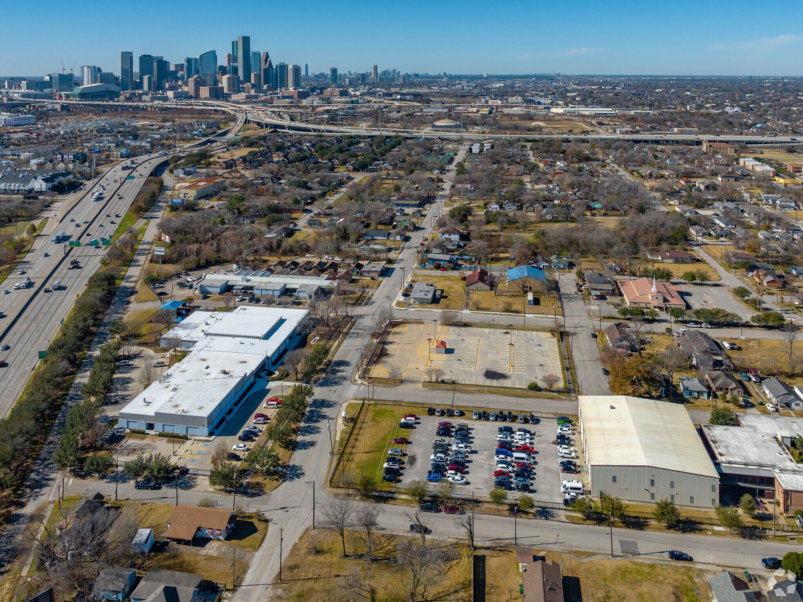

Site Development
We specialize in developing modern, responsive, and scalable websites tailored to your business needs. From corporate websites and e-commerce platforms to custom web applications, our development projects focus on performance, security, and user experience to deliver reliable digital solutions.

Rational Method:
The Rational Method is one of the most widely used mathematical formulas in civil engineering and hydrology for estimating the peak storm water runoff from a specific drainage area (usually under 200 acres). It is a vital tool used to design stormwater systems, culverts, parking lot drainage, and storm sewers.
The formula expressed as:
Q = C.I.A
While the standard Rational Method provides only a single number—the peak flow rate ($Q_p$)—designing detention basins or routing stormwater requires understanding how runoff volume changes over time. To solve this, engineers use the Rational Hydrograph (often called the Modified Rational Method), which translates the peak flow into a continuous, time-varying flow curve.Depending on the duration of the rainfall event ($D$) relative to the watershed's time of concentration ($T_c$), the resulting hydrograph takes one of two shapes: triangular or trapezoidal.